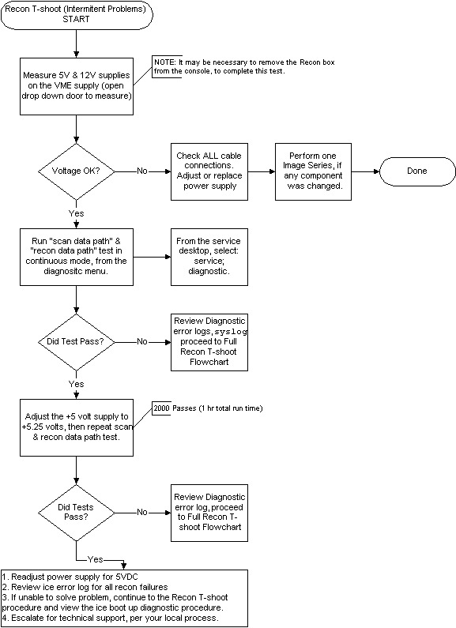
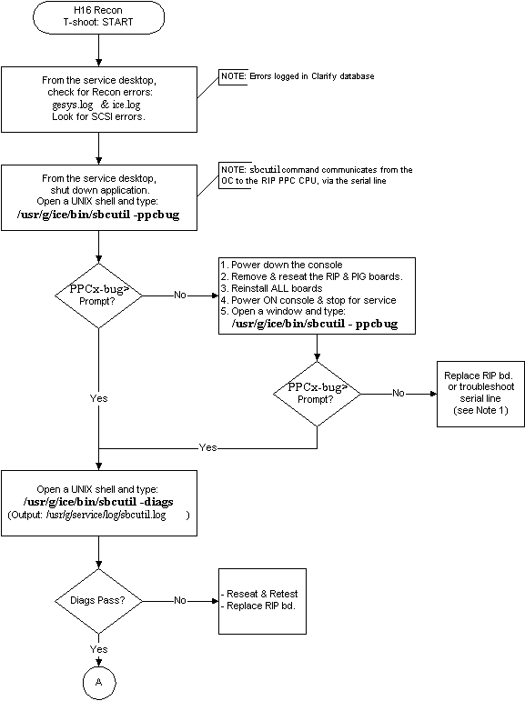
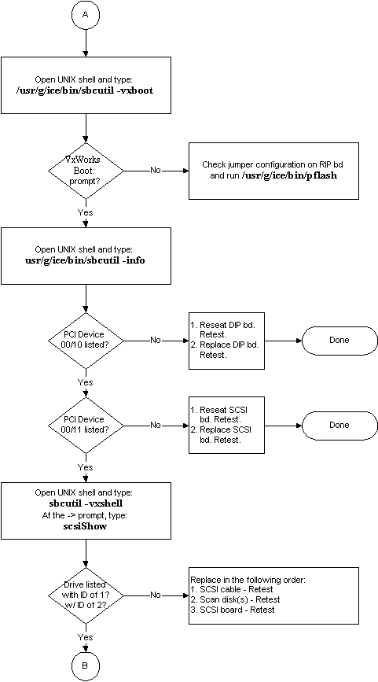
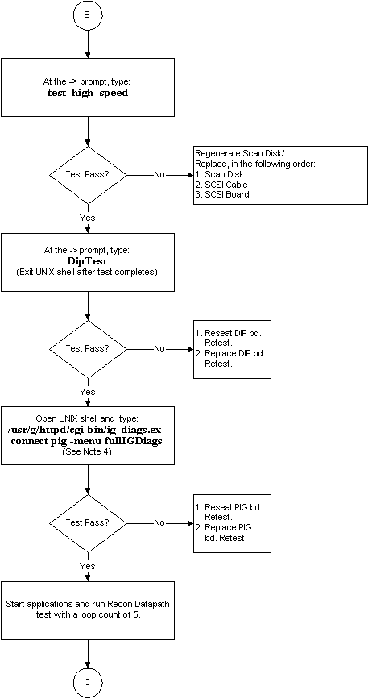
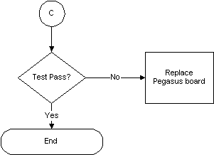

Proprietary to General Electric
Direction 5114045-800, Rev# 10
LightSpeed 4.X Service Information (Advanced)
Proprietary to General Electric |
Illustration 1: Intermittent Problems Recon Troubleshooting Flowchart

To troubleshoot intermittent recon problems:
Adjust 5V supply to 5.25 vdc (This increases the noise generated by the on board regulators).
Run recon data path in the continuous mode for at least 2000 passes.
If any failures occur replace the Pegasus board.
Image artifacts: Try a retrospective reconstruction of the image. If the artifacts are exactly the same it is unlikely that there is a problem with reconstruction. Check the scan data path
DO NOT: You can operate the recon engine with the service doors open for short periods without further damaging the recon engine. Max airflow through the recon engine is dependant on having all service doors closed and the recon engine placed in the console over the air intake vents.
When To Use:
Use this procedure for first pass recon failure screening.
Intermittent Recon failures.
Recon Power Supply intermittent failure screening
DO:
Check all connecting cables for tightness.
Check that all fans are operational.
Proper placement of the recon engine over the air intake vents.
Refer to the H16 component replacement table.
Check with the OLC for unpublished service tips of updates.
Refer to the replacement, troubleshooting, functional block diagrams, and diagnostic service tools for additional troubleshooting aids.
Illustration 2: Recon Troubleshooting Flowchart, Full (1 of 4)

Illustration 3: Recon Troubleshooting Flowchart, Full (2 of 4)

Illustration 4: Recon Troubleshooting Flowchart, Full (3 of 4)

Illustration 5: Recon Troubleshooting Flowchart, Full (4 of 4)

Note 1: A loop back plug can be made from a locally available 8-position RJ-45 jack, by connecting the following pins together:
1 and 6
2 and 3
4 and 5 (for serial line)
Note 2: Output of /usr/g/ice/bin/sbcutil -info on 16 slice scanner (dual-channel SCSI card is implemented as two PCI “functions”, so it is listed twice.)
PCI Function 00/10/0 (00008000) ID/Revision.........=435417B6/00 (DIP) PCI Function 00/11/0 (00008800) ID/Revision.........=00211000/01 (SCSI) PCI Function 00/11/1 (00008900) ID/Revision.........=00211000/01 (SCSI)
Note 3: Output of /usr/g/ice/bin/sbcutil -info on MDAS16 scanner
PCI Function 00/10/0 (00008000) ID/Revision.........=43540000/41 (DIP) PCI Function 00/11/0 (00008800) ID/Revision.........=000F1000/04 (SCSI)
Note 4: Output of /usr/g/httpd/cgi-bin/ig_diags.ex -connect pig -menu fullIGDiags
8-Slice Pegasus [2216467], 64 MByte SPAMs, Version is: E Found Pegasus Daughter Card, 64 MByte SPAMs, Version is: A IG Temperature Sensors: 40.50C(UF) 44.00C(UB) 43.00C(LF) 41.50C(LB) SPAM 0 SDRAM Quick Bus Test Pass: 1 Fail: 0 SPAM 0 SHARC Quick Bus Test Pass: 1 Fail: 0 SPAM 0 SHARC Host Bus Memory Test Pass: 1 Fail: 0 SPAM 0 SDRAM Memory Test............ Pass: 1 Fail: 0 SPAM 0 PowerPC Collision Tests Pass: 1 Fail: 0 SPAM 0 ALL SHARCs Collision Tests Pass: 1 Fail: 0 SPAM 1 SDRAM Quick Bus Test Pass: 1 Fail: 0 SPAM 1 SHARC Quick Bus Test Pass: 1 Fail: 0 SPAM 1 SHARC Host Bus Memory Test Pass: 1 Fail: 0 SPAM 1 SDRAM Memory Test............ Pass: 1 Fail: 0 SPAM 1 PowerPC Collision Tests Pass: 1 Fail: 0 SPAM 1 ALL SHARCs Collision Tests Pass: 1 Fail: 0 SPAM 2 SDRAM Quick Bus Test Pass: 1 Fail: 0 SPAM 2 SHARC Quick Bus Test Pass: 1 Fail: 0 SPAM 2 SHARC Host Bus Memory Test Pass: 1 Fail: 0 SPAM 2 SDRAM Memory Test............ Pass: 1 Fail: 0 SPAM 2 PowerPC Collision Tests Pass: 1 Fail: 0 SPAM 2 ALL SHARCs Collision Tests Pass: 1 Fail: 0 SPAM 3 SDRAM Quick Bus Test Pass: 1 Fail: 0 SPAM 3 SHARC Quick Bus Test Pass: 1 Fail: 0 SPAM 3 SHARC Host Bus Memory Test Pass: 1 Fail: 0 SPAM 3 SDRAM Memory Test............ Pass: 1 Fail: 0 SPAM 3 PowerPC Collision Tests Pass: 1 Fail: 0 SPAM 3 ALL SHARCs Collision Tests Pass: 1 Fail: 0 IMAX Configuration Register Test Pass: 1 Fail: 0 IMAX Data Bus Test Pass: 1 Fail: 0 IMAX Address Bus Test Pass: 1 Fail: 0 IMAX Memory Test (IM0 & IM1) Pass: 1 Fail: 0 IMAX Pixel Localization Test Pass: 1 Fail: 0 IMAX Mirror Image Test Pass: 1 Fail: 0 IMAX Image Attenuation Test Pass: 1 Fail: 0 IMAX Image Accumulation Test Pass: 1 Fail: 0 C67/HPI Bus: 512kB DP Data Bus Test Pass: 1 Fail: 0 C67/HPI Bus: 512kB DP Addr Bus Test Pass: 1 Fail: 0 C67/HPI Bus: 512kB DP Memory Test Pass: 1 Fail: 0 C67/HPI Bus: 256kB DP Data Bus Test Pass: 1 Fail: 0 C67/HPI Bus: 256kB DP Addr Bus Test Pass: 1 Fail: 0 C67/HPI Bus: 256kB DP Memory Test Pass: 1 Fail: 0 C67/HPI Bus: 16MB SDRAM Data Bus Test Pass: 1 Fail: 0 C67/HPI Bus: 16MB SDRAM Addr Bus Test Pass: 1 Fail: 0 C67/HPI Bus: 16MB SDRAM Memory Test Pass: 1 Fail: 0 APU/BPC BPC Fifo Depth Test Pass: 1 Fail: 0 APU/BPC ATR Test Pass: 1 Fail: 0 APU/BPC S&T Test Pass: 1 Fail: 0 APU/BPC DR/R Test Pass: 1 Fail: 0 APU/BPC APU Projection Mem Test...... Pass: 1 Fail: 0 APU/BPC Circular Dual Port Test Pass: 1 Fail: 0 APU/BPC Apu Pipeline Test Pass: 1 Fail: 0 APU/BPC Homogeneity Test............ Pass: 1 Fail: 0 APU/BPC Individual Apu Test............ Pass: 1 Fail: 0 Full IG Diags Completed.
Elapsed time: ~10 min (1 pass)